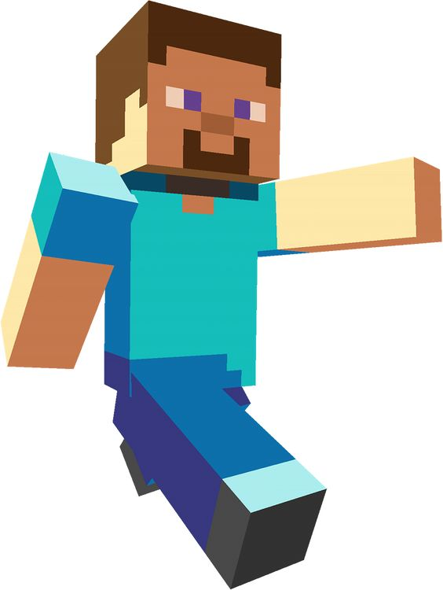
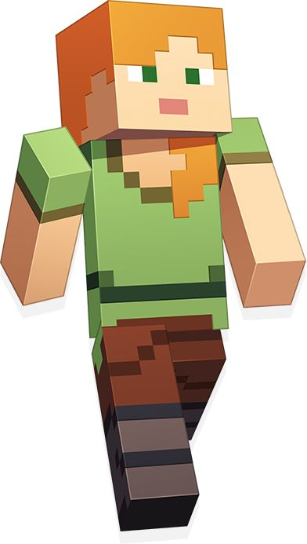
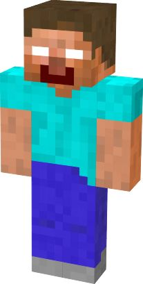
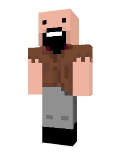
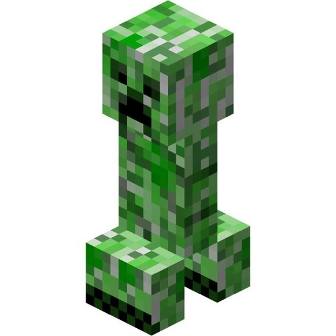
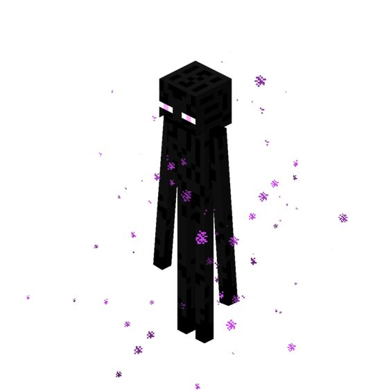

-
Steve
Descrição
Steve é o icônico personagem principal do jogo "Minecraft", criado pela Mojang e lançado em 2011. Caracterizado por seu visual pixelado e simples, ele é um avatar que os jogadores usam para explorar, construir e sobreviver em um mundo tridimensional gerado aleatoriamente. Originalmente sem história própria, Steve tornou-se um símbolo da criatividade e liberdade dentro do jogo, podendo ser customizado pelos jogadores. Ao longo dos anos, Steve apareceu em várias mídias, incluindo animações, livros e outros jogos. Sua popularidade ajudou "Minecraft" a se tornar um fenômeno cultural global. Apesar de sua aparência básica, Steve representa a infinidade de possibilidades oferecidas pelo jogo.
-
Alex
Descrição
Alex é uma personagem introduzida no "Minecraft" em 2014 como uma alternativa feminina a Steve. Criada pela Mojang para oferecer mais diversidade de personagens, Alex possui cabelo ruivo, um visual pixelado e um estilo similar ao de Steve. Assim como Steve, Alex não possui uma história própria dentro do jogo, mas é usada pelos jogadores para explorar, construir e sobreviver em mundos gerados aleatoriamente. A adição de Alex foi bem recebida pela comunidade, ampliando a representação dentro do jogo. Alex aparece em várias mídias relacionadas a "Minecraft", incluindo livros, animações e outros produtos derivados. Sua presença reforça a mensagem de inclusão e criatividade ilimitada do "Minecraft".
-
Herobrine
Descrição
Herobrine é um personagem lendário e enigmático do universo "Minecraft", conhecido por ser uma figura mítica entre os jogadores. Surgiu como um creepypasta em 2010, descrito como uma entidade fantasmagórica com olhos brancos vazios, supostamente capaz de aparecer em mundos dos jogadores sem aviso. A lenda diz que Herobrine é o espírito do irmão falecido do criador do jogo, Notch, embora isso tenha sido desmentido. Nunca oficialmente incluído no jogo, Herobrine se tornou um ícone das histórias de terror e teorias da conspiração dentro da comunidade de "Minecraft". Mojang frequentemente brinca com a lenda, incluindo notas de atualização mencionando a remoção de Herobrine. Apesar de ser fictício, Herobrine permanece uma parte intrigante e assombrosa do folclore de "Minecraft".
-
Notch
Descrição
Markus "Notch" Persson é o criador de "Minecraft", um jogo revolucionário lançado pela Mojang em 2011. Notch começou o desenvolvimento de "Minecraft" em 2009, inspirado por jogos como "Infiniminer" e "Dwarf Fortress". Seu objetivo era criar um mundo aberto onde os jogadores pudessem explorar, construir e sobreviver. Com o lançamento do jogo, Notch rapidamente ganhou reconhecimento global, e "Minecraft" se tornou um fenômeno cultural. Em 2014, Notch vendeu a Mojang para a Microsoft por 2,5 bilhões de dólares e se afastou do desenvolvimento de jogos. Apesar de seu afastamento, sua contribuição para a indústria dos games permanece significativa, tendo influenciado uma geração de jogadores e desenvolvedores. Notch é frequentemente lembrado como o gênio por trás de um dos jogos mais populares de todos os tempos.
-
Crepper
Descrição
O Creeper é um dos mobs mais icônicos e temidos de "Minecraft", introduzido no jogo pela Mojang. Surgiu de um erro na modelagem de um porco por Markus "Notch" Persson, que resultou em uma criatura alta e delgada. Conhecido por seu comportamento silencioso e explosivo, o Creeper se aproxima furtivamente dos jogadores e explode, causando danos e destruindo estruturas. Desde sua introdução, o Creeper se tornou um símbolo do jogo, representando a imprevisibilidade e os desafios do mundo de "Minecraft". Além de sua presença no jogo, ele aparece em vários produtos derivados, como brinquedos e roupas. A figura do Creeper é um elemento central da cultura "Minecraft", amada e odiada pelos jogadores por sua capacidade de surpreender e destruir.
-
Enderman
Descrição
O Enderman é uma criatura enigmática e alta do universo "Minecraft", introduzida pela Mojang em 2011. Inspirado pelo folclore do Slenderman, o Enderman tem olhos roxos brilhantes e a habilidade de se teletransportar, além de poder mover blocos do ambiente. Eles geralmente são pacíficos, mas se tornam hostis quando olhados diretamente nos olhos ou atacados. Encontrados principalmente no "End" e em outros biomas, os Endermen são essenciais para a progressão do jogo, pois eles soltam pérolas de Ender, necessárias para encontrar e acessar o portal do "End". Sua presença misteriosa e comportamento único fazem do Enderman uma das criaturas mais fascinantes e temidas do jogo. Ao longo dos anos, eles se tornaram ícones do "Minecraft", contribuindo para o profundo senso de mistério e aventura que define o jogo.